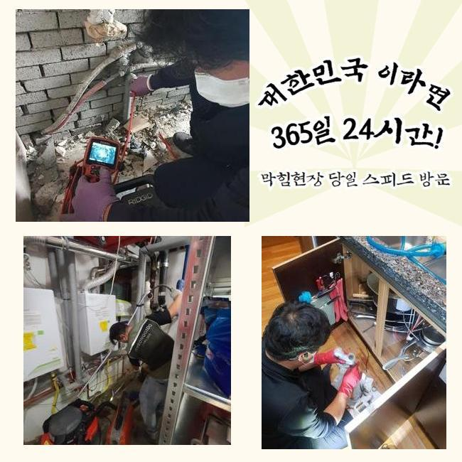
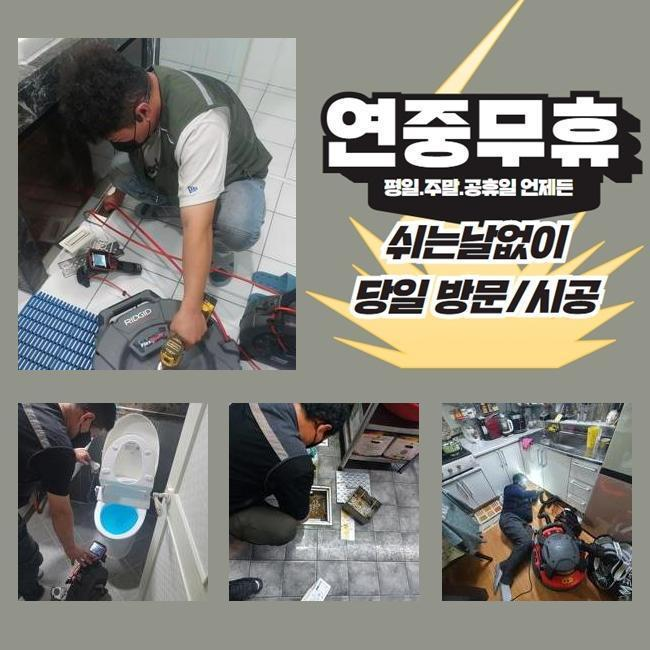
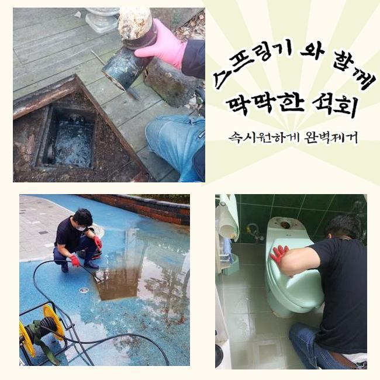
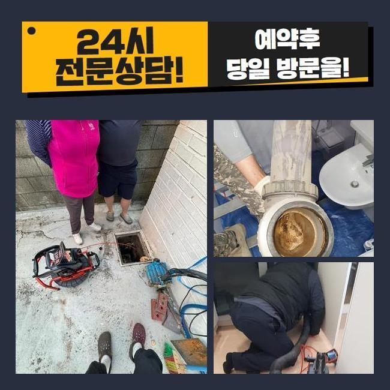
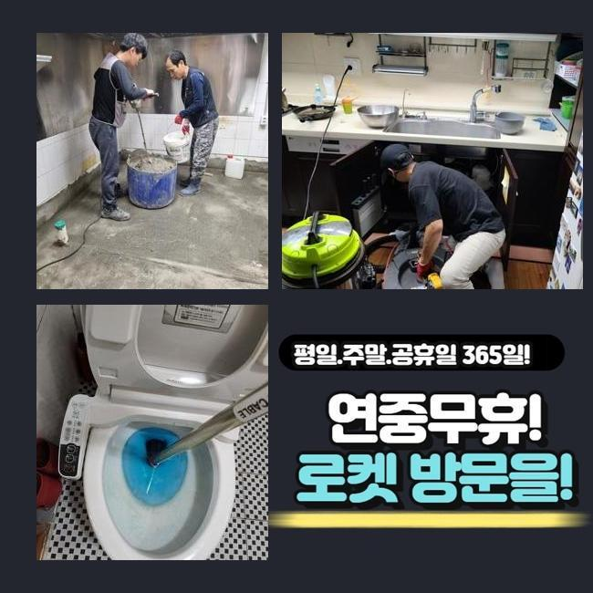
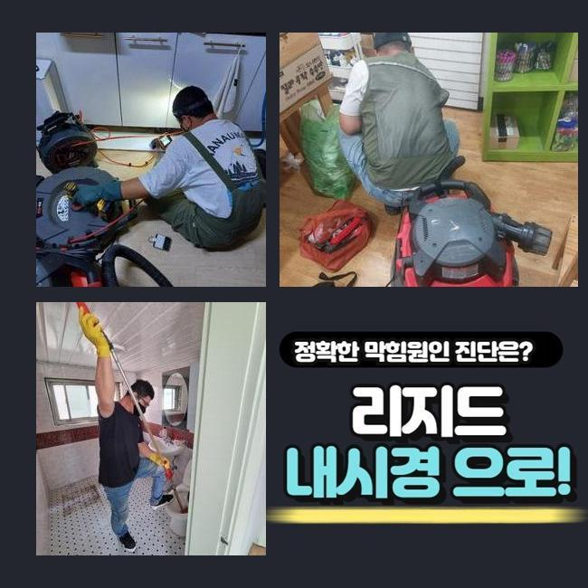
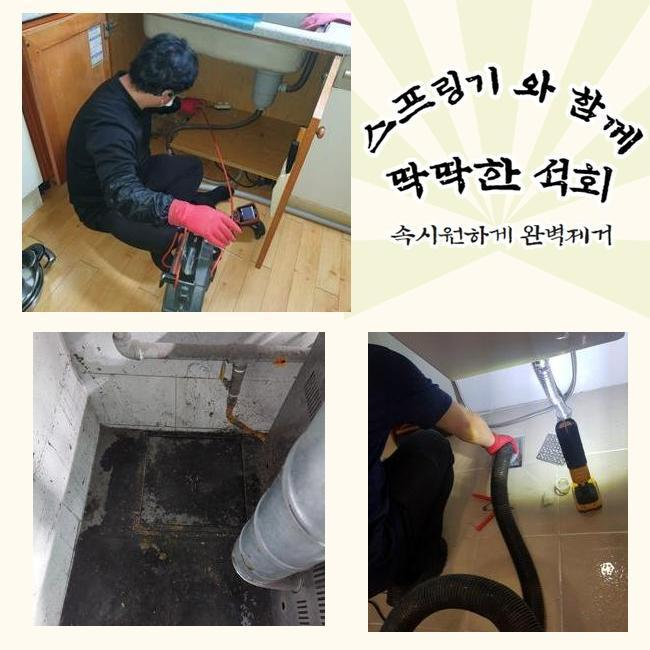

🏠 광주 배수구뚫는곳 성남 하수구막힘비용
광주 싱크대막힘 전문 시공 후기

📋 작업 개요
- 위치: 광주
- 서비스 유형: 싱크대막힘, 하수구막힘, 배관막힘, 누수수리, 역류해결, 뚫는업체, 배관청소, 고압세척, 설비공사
- 작업 일시: 2024. 12. 22. 19:57
- 업체명: 하수구수사대 (010-5615-2118)
🔍 문제 상황
광주 배수구뚫는곳 성남 하수구막힘비용
주방이나 욕실은 일상에서 필수적인 장소죠
그러므로 일상중에 갑작스럽게 물빠짐이 안된다면 불편은 말로다 형언하기 어려울겁니다
그러나 물이 천천히 빠지는 상황을 방치하고 무시하는 의뢰인분들이 많더라고요
시간이 지난뒤 없어져버리거나 최소한 악화되지는 않겠다고 여기는 경우죠
반면 실상은 그것과 다르죠
그와 관련지어 그것들이 발현되었을 때 즉각적으로 처리한다면 고약한 형국을 피해갈수 있을거에요
배수기능이 저하되었다는건 배수관 안쪽에서 흐름성에 장애를 일으키는 슬러지가 상존한다는 이야기에요
이물질들이 추가로 누증돼 한층더 힘겨운 사태로 치닫기 전 전문가를 수소문하여 적합하게 검정을 실시하고 순차적으로 청소해야 돼요
그저께 해결한 장소를 세밀하게 말씀해드리도록 하겠습니다
비슷한 증상으로 전문가를 찾으시는 이웃님들께 보탬이 됐으면 합니다
저희기술팀이 출장간 데는 빌딩 안에 위치한 음식점이에요
의뢰인께서는 싱크대와 욕실배관까지 전면적으로 물흐름이 멈췄다고 이야기하셨어요

🔎 원인 분석
💡 전문가 진단: 정밀 진단 장비를 사용하여 슬러지의 고착 여부를 판명하고 타격/세척 작업을 실시했습니다.
전적으로 고장나버린건 아니었고 얼마지나면 소멸되었기에 차후에 고쳐보자는 생각으로 운영을 이어나가셨다고 하셨어요
결과적으로 이물의 양이 증대되어서 물흐름이 멈춰버렸고 물이 역류되는 사태까지 일어나게 된거죠
배수관의 구조는 난삽하고 비좁은 길목으로 형성돼 있죠
그렇기에 직관적으로 살펴봐서는 슬러지가 얼마만큼 상존하는지 파악하기 힘들죠
그렇기에 시공현장으로 출발할때는 배관내시경을 필히 갖추어야 한답니다
배관내시경의 안에는 방수카메라가 달려있어요
그걸로 직관하기 어려운 파이프 하부까지 선명하게 확인할수 있으며 이물의 특성까지 알수있는 거예요
이것을 통하여 확인해본 배수관 내부는 굉장히 더러웠습니다
휴지조각 등을 포함해서 크고작은 잔재들이 적층을 이루고 있었답니다
해당 잔존물들이 엉겨서 돌처럼 굳은 상태로 바뀌어 좁다란 하수관구멍을 틀어막아 물빠짐이 올바르게 될수가 없었답니다
그냥 내버려둔다면 몸집을 더더욱 키워가면서 배관에서 떨어지지 않게 돼요
그렇다면 더욱더 사태가 악화되는 것이므로 조속히 수리하기로 합니다
이러한 상황에서 활용하는 기계는 플렉스샤프트라는 것인데요

🔧 작업 과정
좁아진 배관틈으로도 쉬이 진출가능한 이점이 있죠
장비끝에는 노커라는 쇠붙이가 붙어서 돌면서 하수관내에 잔류하는 굳어진 여러 노폐물들을 분쇄해주죠
전면적으로 분쇄공정을 단행하였는데요
전동기기와 노커를 연결하고 나서 샤프트장비를 작동하여 굳어진 잔존물을 제거해 나갔습니다
어느쪽에 찌꺼기들이 모여있는지도 확인해야 됐기에 내시경카메라를 활용한 관찰도 동반진행 하였어요
이것을 통하여 누적량이 많은곳을 중심으로 공사한다면 한층 재신속하게 끝낼수가 있죠
배수관 안쪽면이 훼손되지않게 조심하며 이물들만을 분명하게 타게팅하여 제거해 나갔습니다
만일에 시공중에 관로에 무리한 힘을 주면 금이 가서 누설현상이 일어나기도 해요
그러하기에 내시경cctv나 플렉스샤프트 등의 기기가 준비되는것도 중요한 요소이지만 시공자의 기술력도 충분해야 할것입니다
노폐물들이 잔류한 장소를 깔끔하게 분쇄하고난 뒤에 미미한 물질이라도 남아있지 않게 제거해주었어요
그리고 바로 점검에 들어갔는데요
다량의 폐수를 일시에 배수문으로 흘려보냈고 체류하거나 솟아오르는 증상은 없는지에 대해 검사하였어요
아무 문제가 없이 소멸되는걸 보았고 즉각 또다른 수리공간으로 넘어갔습니다
여기서 정리한다면 몇달간 이용하시기에는 괜찮겠으나 나중에 정체가 나타날 확률이 있어서였답니다
욕실쪽의 배수관과 결속된 메인배관도 점검하여 정체의 근본 동기를 파악해나가기로 합니다
욕실배관이 막혀버리면 연결되어 있는 횡주배관까지 슬러지가 누증되었을 가망이 커서 전체적인 하수관 세척작업을 진행하는게 바람직하죠
그래서 메인관로에 접근해서 조사를 철저히 이행했고 저희 예상대로 고착화된 이물들을 포착할수가 있었어요
횡주관과 관련된 개별배수관까지 점차적으로 세척을 진행했고 찌꺼기가 제거된 말끔해진 하수관을 목도할수 있었죠
머리카락이나 물티슈 등 녹아내리기 힘든 쓰레기들은 샤워나 세안을 하시면서 다시 쌓일 수 존재하는데요
그래서 6개월에 1회 정도는 관련기술자에게 의뢰하여 정비하시는게 좋다고 말씀드렸어요
거기에 더하여 평상시에 배수기능을 관리하는 방안들도 저희들의 지식선에서 차근차근 알려드렸어요


✅ 작업 완료
배수관이 막혀버리면 삶에 큰 고충을 맞닥뜨리게 되니 해당 사태까지 커지지 않게 섬세하게 방예를 해주는게 좋겠죠
토요일이나 주말에도 출장가능하다는 부분도 알려드렸고요
20년 이상된 거주지에선 누수도 많이 나타나기에 그것에 관한 시공문의도 많아요
이에 곧바로 뚫음뿐만 아니라 누수작업도 한다는 사실을 설명드렸답니다
어디에서 고장이 생겼고 며칠전부터 그런건지 사전에 알려주신다면 더 빠르게 상담해드릴 수 있습니다
또한 예약시간에 맞춰 배관전문가가 전문공구들을 가지고 출동하고 있사오니 편안하게 문의하시길 당부드려요




⚠️ 베란다 누수 및 방수 관리 방법
- ✅ 비가 많이 올 때 창틀 주변이나 아래층 천장에 얼룩이 생기는지 정기적으로 확인해 보세요.
- ✅ 우수관 주변 실리콘 마감이 들뜨거나 깨진 틈새가 있는지 손상 여부를 수시로 체크하세요.
- ✅ 베란다 바닥 타일의 줄눈(메지)이 소실되면 그 틈으로 물이 침투하여 누수가 유발됩니다.
- ✅ 누수 의심 증상 발견 시 방치하면 아래층 손실이 커지므로 즉시 전문가의 진단을 받으십시오.
💡 핵심 정리
- 확실한 장비 작업(내시경 점검 및 샤프트 스케일링)으로 원인을 뿌리 뽑습니다.
- 작업 후 1년 이내에 동일한 부위 재발 시 100% 무상 A/S 서비스를 보장합니다.
- 서울 · 경기 · 인천 전 지역에 24시간 언제든 긴급 출동할 수 있도록 항시 대기 중입니다.
❓ 자주 묻는 질문 (FAQ)
🚨 광주 싱크대막힘 문제로 고민이신가요?
정확한 원인 진단과 확실한 시공으로 재발 없는 해결을 약속드립니다.
24시간 긴급 출동 | 서울 · 경기 · 인천 전지역 | 1년 내 재발 시 무상 A/S